THE JACKZ TREAT POUCH
Treat Bags
A treat pouch built for real life with dogs, designed by a dog trainer with 35 years of experience.
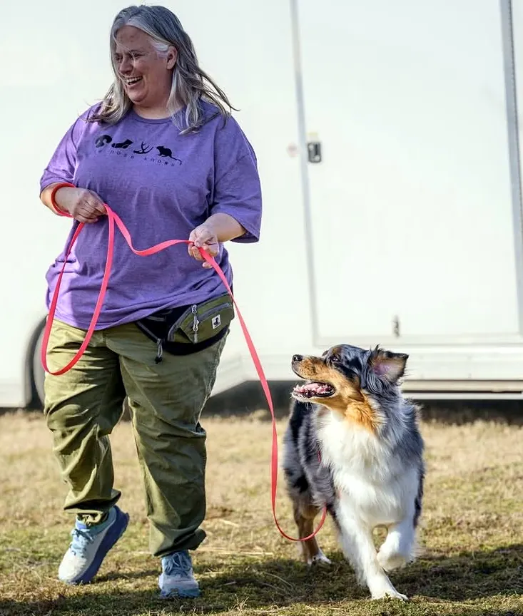

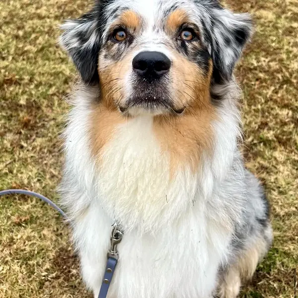
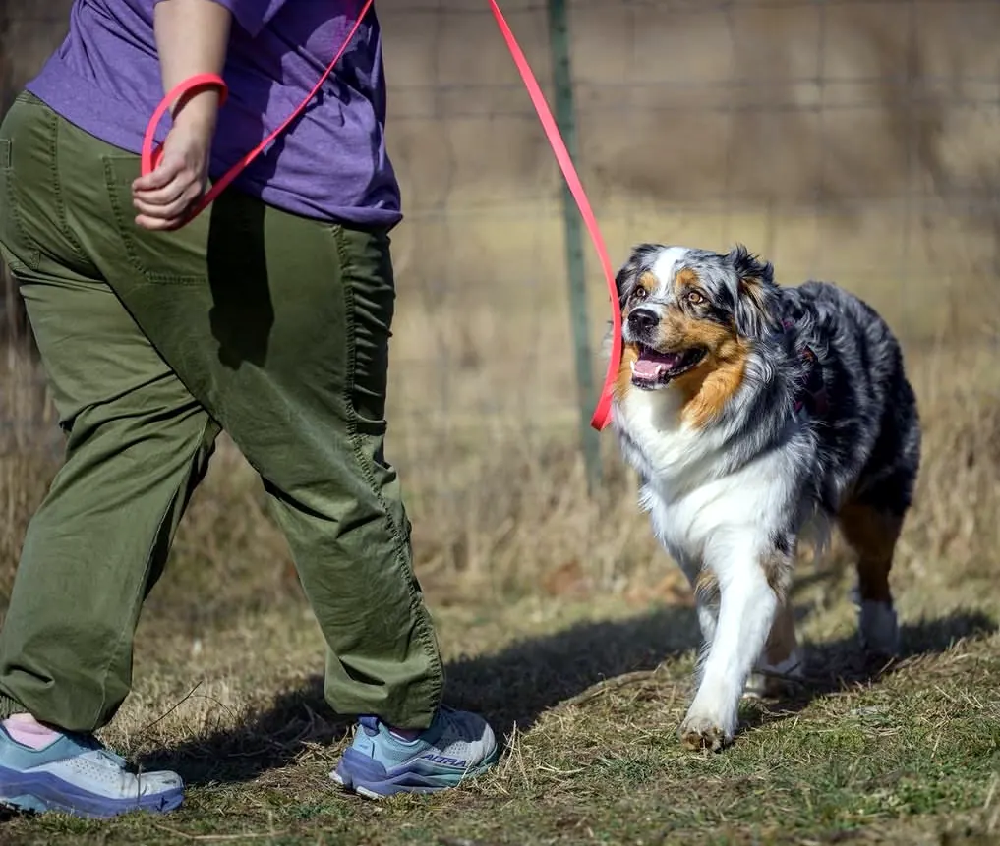
Most Treat Pouches Are a Pain to Keep Clean
Dog people carry treats everywhere, and the pouch takes the beating.
- Forgotten cheese cubes and soft treats spoil inside pouches with no way to pull the lining out and wash it.
- Handlers start to dread opening the bag, and a simple walk begins to feel like a chore.
- Every dog owner deserves walks and training sessions that feel like time together.

Designed by a Dog Trainer Who Has Been There
After over 35 years of training dogs, competing in dog sports, and forgetting one too many cheese cubes in treat pouches, Courtney set out to create something better.
The result is a practical, easy-to-clean treat pouch designed for real life with dogs.
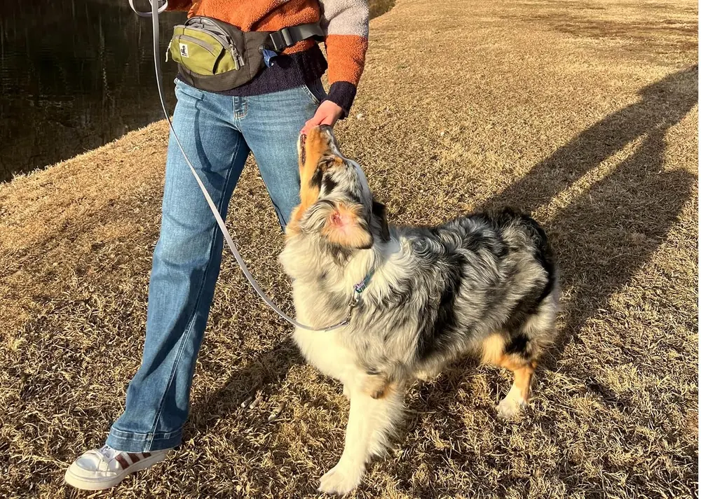
From Box to Trail in Three Steps
- Order your JACKZ Treat Pouch on Amazon.
- Snap the liner in, fill it with treats, and clip the bag at your waist or across your body.
- Head out with your dog. When the day is done, pop the liner out to wash it, or put it in the fridge with the leftover treats.
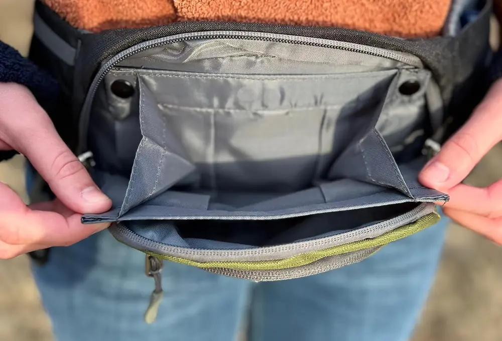
A Removable Liner Made for the Fridge and the Dishwasher
If you've ever forgotten treats in your pouch after training, you know the mess that follows. The JACKZ Treat Pouch has a liner that snaps in and out. Store it in the refrigerator between sessions, then pull it out for cleaning when the day is done.
- Top-rack dishwasher safe
- Magnetic closure keeps treats from spilling when you bend over
- Fridge-friendly for high-value treats
- Helps prevent odors and messy buildup
Room for Everything a Walk Needs
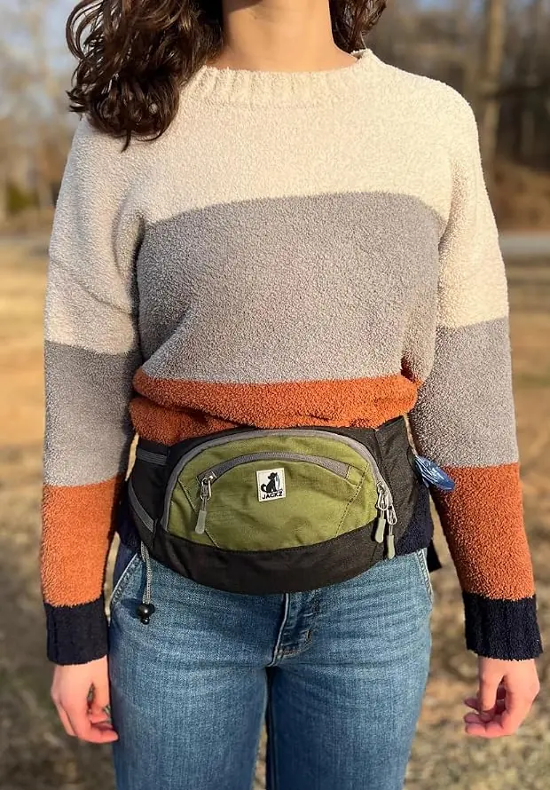
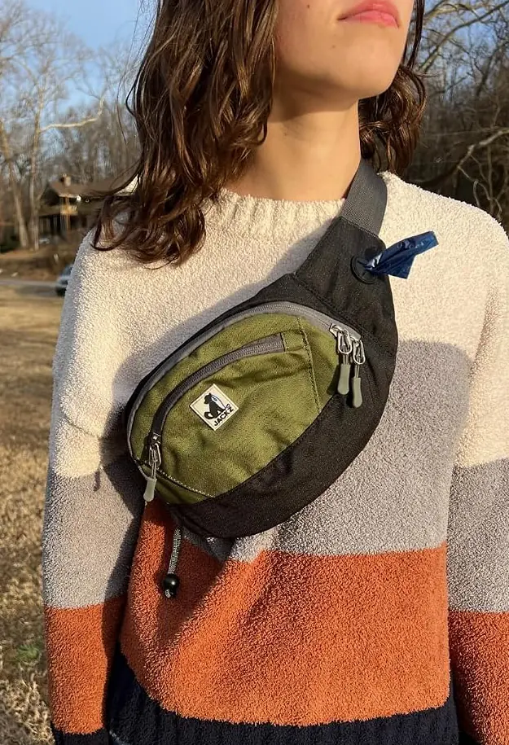
Poop bag dispenser
A built-in dispenser and a holder for used bags keep your hands free on walks.
Separate phone pocket
Your phone rides in its own pocket, away from the treats.
Front pocket for keys
A small front pocket holds keys and the other little things you reach for.
Large main pocket
Space for toys, treats and training gear.
Waist or crossbody
A wide strap and sturdy clip let you wear it like a fanny pack or across your body.
Size-inclusive fit
The adjustable strap fits sizes XS to 3XL.
Meet Jack
JACKZ was inspired by one very special dog.
Jack came into Courtney and Todd’s lives as a foster puppy who needed a little extra care. What we didn't expect was that he'd completely steal Todd's heart. The man who once "tolerated" the dogs suddenly had a best friend he couldn't imagine life without.
Today, Jack is the heart behind JACKZ, the inspiration for our logo, and a daily reminder of the incredible bond between people and their dogs.
Field-Tested by Courtney's Crew
Three standard poodles and an Australian shepherd carry this pouch through barn hunt, scent work, dock diving and muddy creek walks.
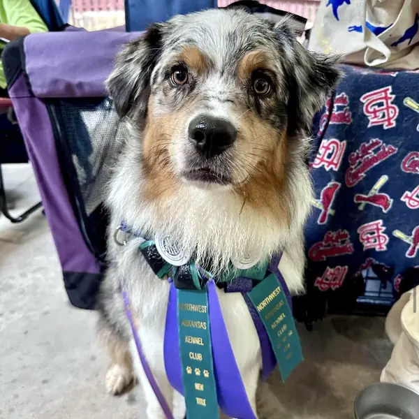
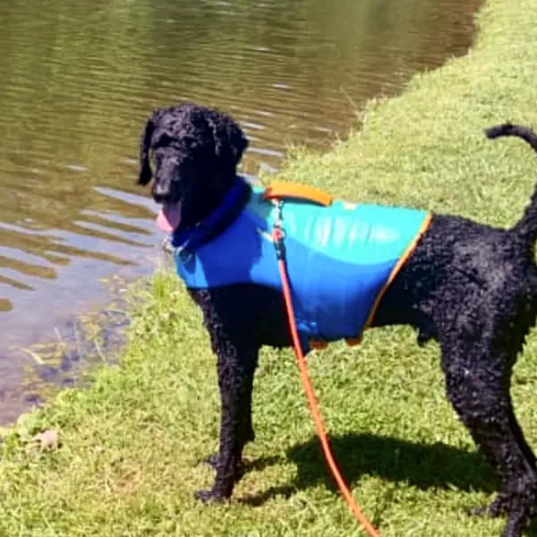
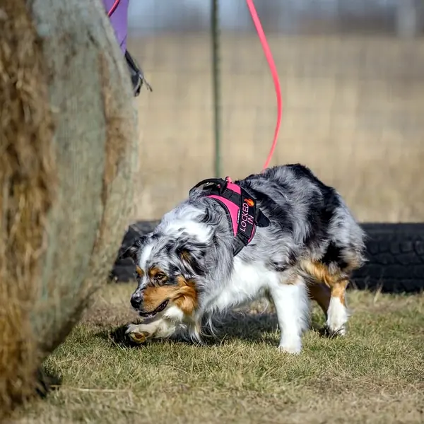
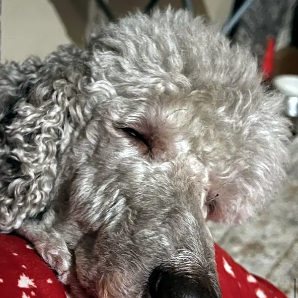
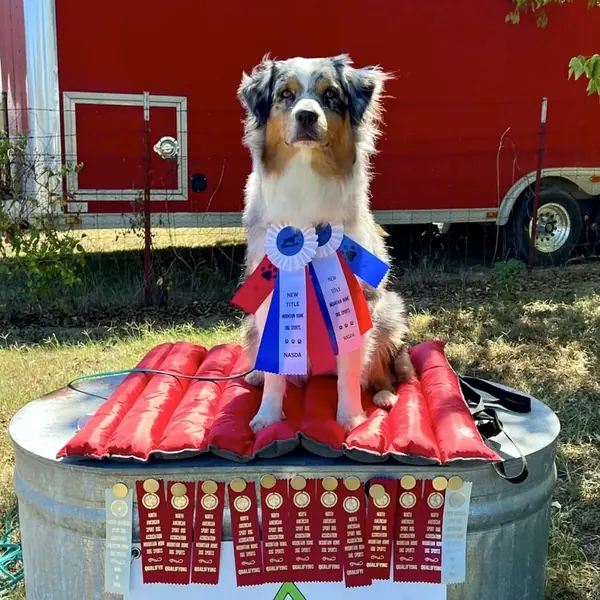
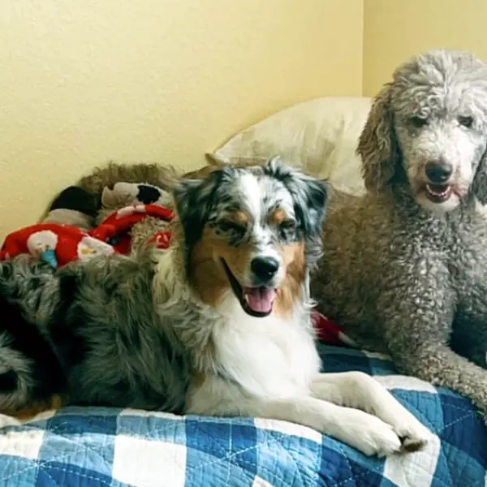
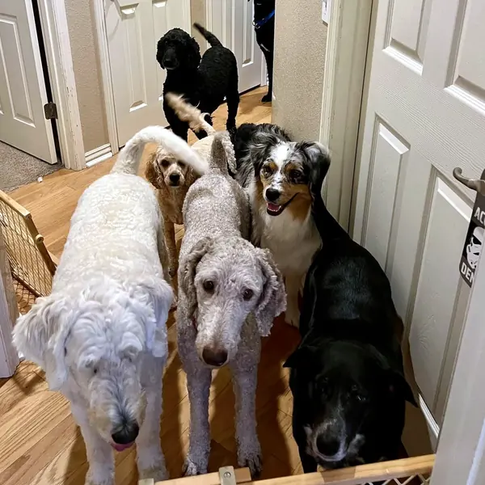
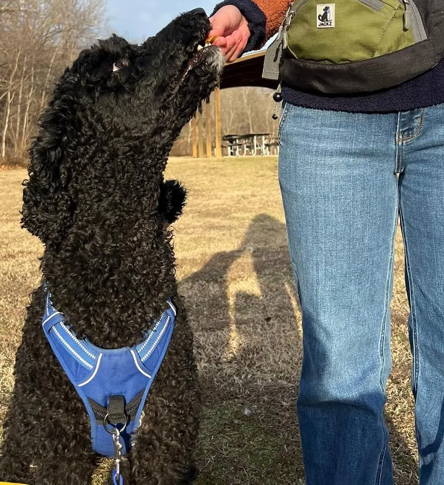
What Handlers Say After Training With It
“The removable treat pouch that is magnetic closure is genius. You can pop it out and put it in the refrigerator and when it is dirty, you can wash just the treat pouch.”
“This bag has seriously made training my puppy so much easier. I use it every time we practice tricks, and I love how I can just snap out the treat pocket and clean it without any mess.”
“Best dog treat carrier on the market. Plenty of space for treats, phone, pepper spray, bags etc.”
“This is a dog trainers dream treat bag made by, obviously, a dog trainer.”

Treat Bag Questions
Can the treat liner go in the fridge?
Yes. The liner snaps out, so you can store it in the refrigerator between training sessions with the treats still inside.
Is the liner dishwasher safe?
Yes. Wash it on the top rack.
What sizes does the strap fit?
The adjustable strap fits sizes XS to 3XL.
Can I wear it crossbody?
Yes. Wear it around your waist like a fanny pack or across your body.
Does it carry poop bags?
It has a built-in poop bag dispenser and a holder for used bags.
Is there a warranty?
The JACKZ Treat Pouch comes with a 60-day manufacturer warranty.
Where can I buy it?
The JACKZ Treat Pouch is sold on Amazon.
Order Your JACKZ Treat Pouch
Built for muddy paws, slobber, and the busy (and sometimes forgetful) handler.